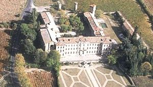
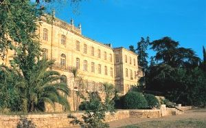
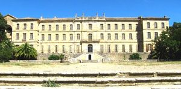
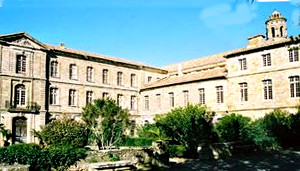
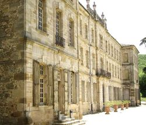
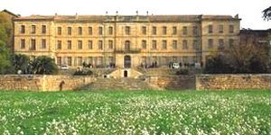

Recensement Jean-Claude Truffet






| Département | 34 — Hérault |
| Canton | Roujan |
| Commune | Roujan |
| Type d'édifice | Abbaye |
| Période d'origine | XIII |
CASSAN, le XIIIe siècle marque un tournant décisif pour le prieuré. Le pape Innocent III, à l'origine de la croisade contre les Cathares, promulgue une bulle d'exemption à l'encontre du prieuré conventuel de Cassan, le soumettant directement au Saint-Siège ; le prieuré échappe ainsi à la juridiction des évêques de Béziers. Au niveau du temporel, les chanoines se donnent le roi de France Louis IX pour suzerain en 1268. Au XIVe siècle, le monastère est fortifié pour protéger la communauté des méfaits des routiers. Les guerres de religion vont aggraver les difficultés. En 1539, puis de nouveau en 1563, les troupes protestantes avec à leur tête Jacques de Crussol et Claude de Caylus (Seigneur de Faugères) incendient et pillent le monastère. Le déclin amorcé au XIVe siècle se poursuit dans les siècles suivants ; en 1605 le prieuré n'héberge plus que sept ou huit chanoines. En 1671 le prieuré est rattaché à l'abbaye Sainte-Geneviève de Paris. Dans la seconde moitié du XVIIIe siècle, le prieur commendataire, Pas de Beaulieu rebâtit le monastère.
À la Révolution Française, les chanoines, qui ne sont plus que cinq, sont chassés. Le prieuré est déclaré bien national ; il est vendu en mars 1791 à Marc Antoine Thomas Mérigeaux, avocat à Pézenas, qui l'aurait acheté pour le compte du Prince de Conti afin d'y loger sa maîtresse madame de Brimont. Au cours du XIXe siècle et XXe siècle le site passe par diverses mains est acquis en 1947 par l'état pour y héberger des centres de formations administrés par le ministère de l'Éducation nationale puis par le ministère des Dom-Tom. En 1995, Cassan retourne dans le domaine privé. Le château est acheté en 2002 par un groupe immobilier qui y développe actuellement (mars 2011) des programmes dinnovation pour entreprises et vise à en faire un centre européen de prévention et de recherches sur le bien-être au travail. Ce projet est mené par Gabor Mester de Parajd, architecte en chef des monuments historiques.
Les bâtiments médiévaux sont entièrement rasés et reconstruits dans le style de l'époque. Le somptueux palais conventuel serait l'uvre d'un membre de la famille Giral, qui compta plusieurs architectes à Montpellier. L'église voit son chevet modifié, mais pour le reste elle n'est heureusement que remanié, ce qui en fait le seul témoin architectural du monastère roman élevé par saint Guiraud au début du XIIe siècle. Le monastère prend alors sa nouvelle appellation laïque de « Château de Cassan ». L'édifice et ses abords sont ouverts à la visite et accueillent différents événements culturels.
Le prieuré Notre-Dame de Cassan (façades et toitures), sur tois niveaux cinquante-sept ouvertures rebâties sur dix-neuf travées, treize pour le corps central et trois pour chacun des pavillons en légère saillie qui le flanquent au centre de la façade un avant corps avec fronton triangulaire avec une porte d'entrée cintré et un balcon au-dessus, les ferronneries, la cour de lancien cloître, sa grande galerie au rez-de-chaussée, le grand escalier avec sa rampe en ferronnerie, l'ancien réfectoire devenu le grand salon aux boiseries, les terrasses avec leurs ferronneries, le jardin avec les constructions qu'il abrite, dont le pavillon sud-ouest font lobjet dun classement au titre des monuments historiques depuis le 26 janvier 1998.
Madame de Brimont
"
L'Abbaye de Cassan à Roujan.